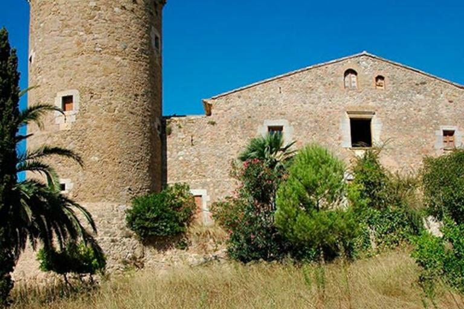

Visita · Montgrí
El Mas de la Torre Gran és un mas fortificat al municipi de Torroella de Montgrí (Baix Empordà) declarat bé cultural d'interès nacional . En la zona existent entre Torroella de Montgrí i…